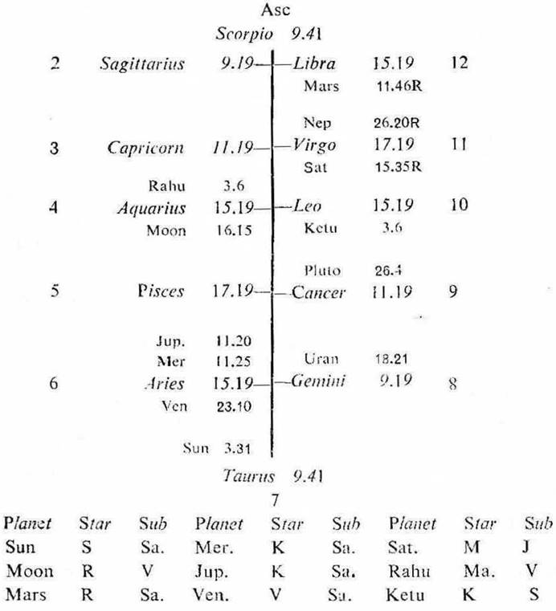
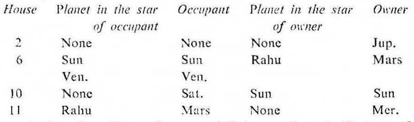

Female. Birth 17-5-1952 Saturday; 7-39 p.m. I.S.T; 23°N2', 72°E 35'; Ayanamsa 23° 5'.

6th & 10th cusps. The sub lord of the 6th and the 10th cusps is Venus. It is in its own star Venus in 6 and in the sub Saturn in 10. So Venus is the significator of 6 (service or money from others) and connected with 10 (occupation). Hence the sub lord of the 6th and the 10th cusps promises earning to the native.
2nd cusp. The sub lord of the 2nd cusp is Jupiter. It is in the star Ketu (being in Leo represents Sun in 6 owning 10) and in the sub Saturn in 10. So Jupiter is the significator of 6, 10 and connected with 10. Hence the sub lord of the 2nd cusp promises earning to the native.

Jupiter, Sun, Venus, Saturn and Rahu are the significators of money or service. Among them Sun and Venus are in the sub Saturn in 10; Rahu is in the sub Venus in 6. So Sun, Venus and Rahu are strong significators; among them Rahu is stronger than Venus.
This native was born during the period of Rahu with balance of 5Y 0M 23D. The period of Jupiter will start from 10-6-1957 and will continue upto 10-6-1973.
Jupiter is the cuspal sub lord of 2 and it is the significator of 2, 6 and 10 as discussed above, So the native will be able to earn during its period.
Rahu is among the significators of money, so it should be given preference over other significators. Hence Rahu should be selected as the sub period ruler.
Venus is among the strong significators and it is the cuspal sub lord of 6 and 10. So it should be selected as the inter period ruler.
Thus during the joint period of Jupiter, Rahu and Venus (30-7-1972 to 24-12-1972) the native will get service and will begin to earn.
The native got her first employment on 12-10-1972, when Sun was transitting in Virgo 25° 24' in the sub Rahu (the sub period ruler); Moon in Scorpio 19° 20' in the sub Venus (the inter period ruler); Jupiter in Sagittarius 8° 29' in its own sub Jupiter (the period ruler); Rahu in Sagittarius the sign owned by Jupiter; Venus in Leo 14° 18' in the star and sub of Venus itself. Thus the transit agrees with the joint period rulers.